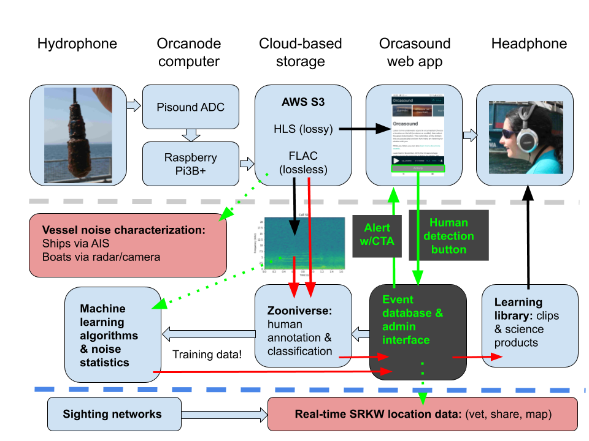
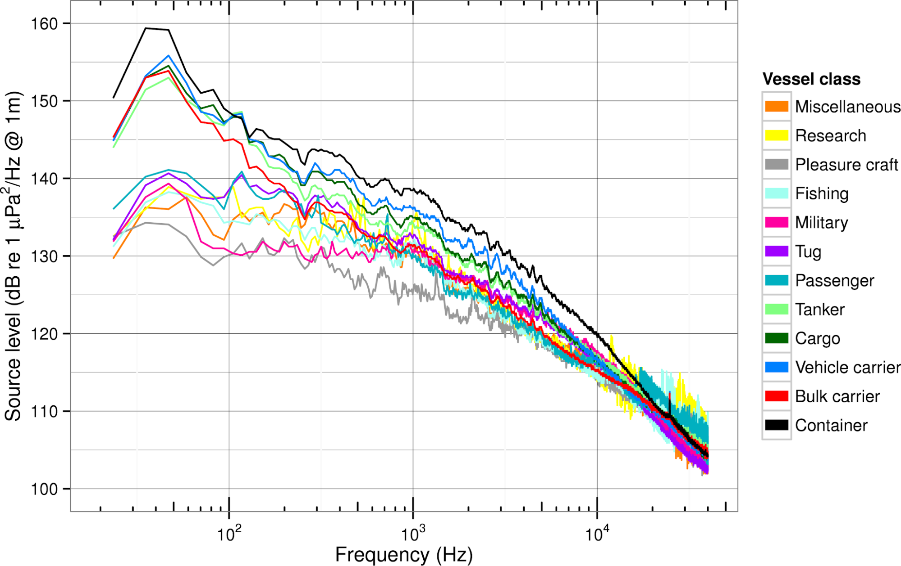
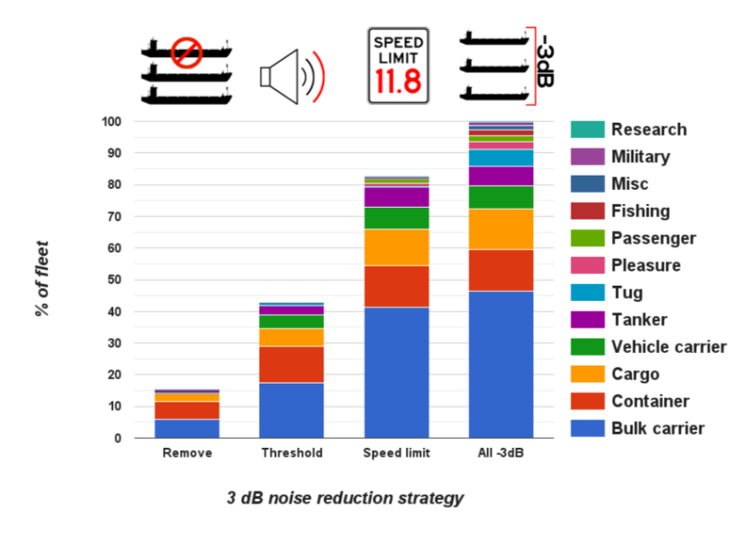
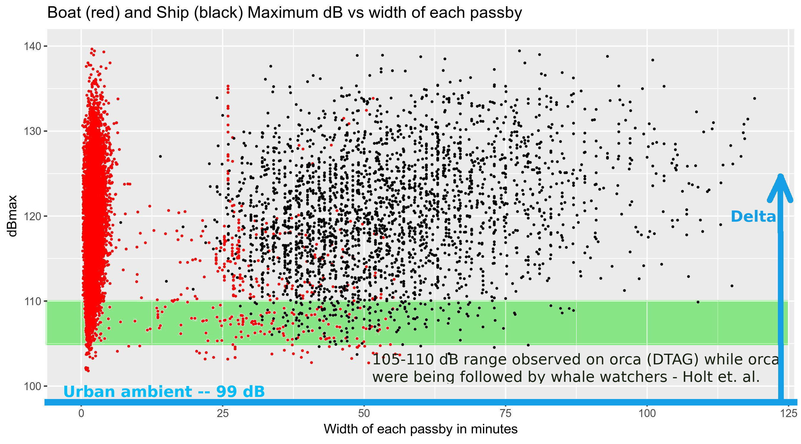
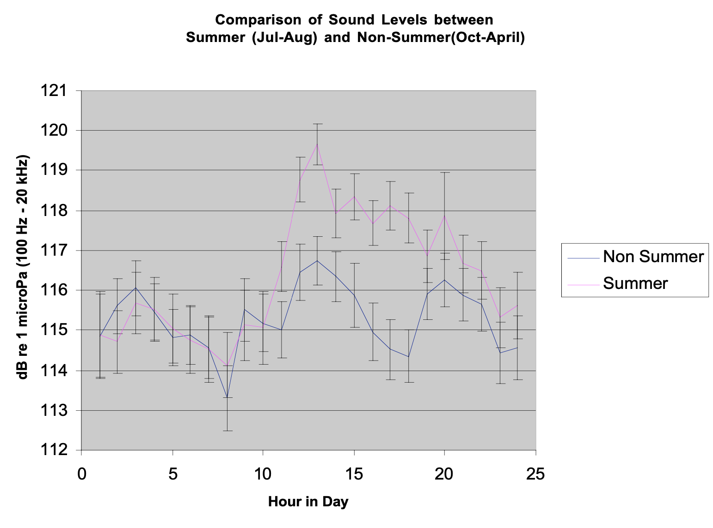
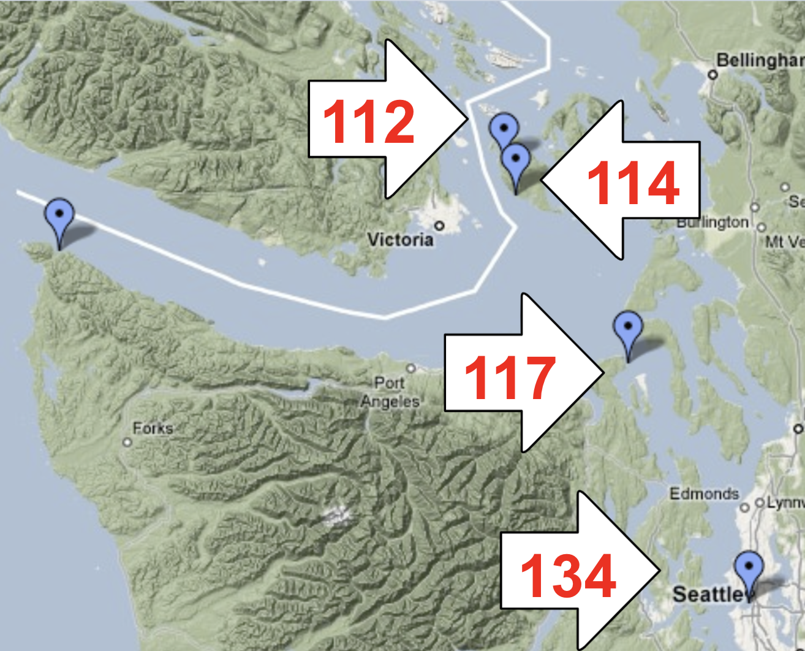

Existing hydrophone network Assets that could help implement a underwater noise indicator within the Marine Water Quality Vital Sign
Outline (focus on real-time, continuous assets in WA):
Non-WA, Non-Orcasound assets you should know about
Orcasound: a tool for SRKW+ research, management, and education
Orcasound: a tool for characterizing underwater noise in critical habitat of Southern Resident killer whales (SRKWs)
Vital Sign Revision Project and potential noise indicators
About me:
UW Oceanography, PhD (2003)
15+ years SRKW bioacoustic research/teaching and coordinating Orcasound
President, Beam Reach (WA Social Purpose Corporation)
Chair of Marine Mammal Work Group within the Puget Sound Ecosystem Monitoring Program (2018-present)
Non-WA or Non-Orcasound assets...
...that could help implement noise indicators, establish baselines, and monitor noise levels
Other cabled, real-time hydrophone assets in the Northeast Pacific
Canadian whale tracking infrastructure ($10M+ investments by ONC; DFO, ECHO, SIMRES++)
Lime Kiln Lighthouse - SMRU and The Whale Museum
Outer coast U.S. assets ($100M investments: e.g OOI Newport node, MARS, U.S. Navy)
Autonomous recorders or other non-real-time hydrophones
Critical habitat NOAA assets (PALs, EARS, etc.)
Many past deployments in SRKW habitat (APL/PALs, MARUs, HARPs, JASCO/SMRU, SoundTraps, etc.)
Deployments on SRKWs (DTAGs)
Other real-time sources of SRKW detections and/or non-cabled audio: wavegliders (humpbacks); SMRU CABs
Vast and growing network of Salish Sea marine sensors, e.g. acoustic gliders (NANOOS/NVS)
Orcasound
An evolving tool for SRKW conservation

The product of ~20 years of community scientists listening for whales, Orcasound is now a cooperative hydrophone network and an open source hardware/software project.
Orcasound 2021 map and membership
Cooperative of researchers, educators, & community scientists
Orca Network
Port Townsend Marine Science Center
Beam Reach & Colorado College
The Center for Whale Research
The Whale Trail
Oceans Initiative
Orca Behavior Institute
Whale Scout
Deep Green Wilderness
Friends of Lime Kiln Society (FOLKS)
Cetacean Research Technology
Pacific Mammal Research
LAB-core System Hydrophones
Vashon Nature Center
Sound Action (2021 pilot node on Vashon)
Physical exhibits include: Seattle Aquarium; Port Townsend Marine Science Center; Langley Whale Center; Lime Kiln Visitor's Center (via FOLKS)
The good news: there are many ways to "more than mitigate" vessel noise.


Operational (temporary) and technological (permanent) options (see Williams+2019)
The Quiet Sound program will consider these options for Puget Sound commercial ships.
Orcasound's Shipnoise.net project developed a prototype in Dec., 2020, for ranking ships based on how much they raise noise levels above a node's "urban ambient" baseline level.
Broadband received level peaks
Ships and boats have similar maxima, but ships last longer
Validating noise peaks & speed with AIS, cameras, and radar
Slow boats have lower maxima, but usually last longer than fast boats...
Images from the U.Vic./NEMES automated camera at Orcasound Lab. Smooth curve (black) is 1200-second running average broadband dB level. Now also tracking boat type & speed with M2 AIS/radar/camera system./p>
Monitoring ship noise in SRKW habitat
Urban ambient noise level: a baseline for "delta" noise metrics
Maximum received noise level vs duration
From ASA 2019 talk by V.Veirs with ref. to Holt et al., 2017, "Noise levels received by endangered killer whales..."
Monitoring aircraft noise in Seattle
Orcasound ambient noise studies
Across Puget Sound, mean noise levels vary seasonally & geographically.

Hourly means (of 2-second samples) at Orcasound Lab vary seasonally during daytime "boating hours" (11 a.m. to sunset)

Spatial varition in annual (2008) mean broadband noise levels.


 Right whale stress fell after 9/11 decreased ship noise in 2001 (Rolland et al., 2012)
Right whale stress fell after 9/11 decreased ship noise in 2001 (Rolland et al., 2012)